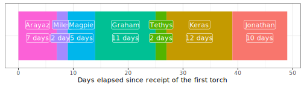
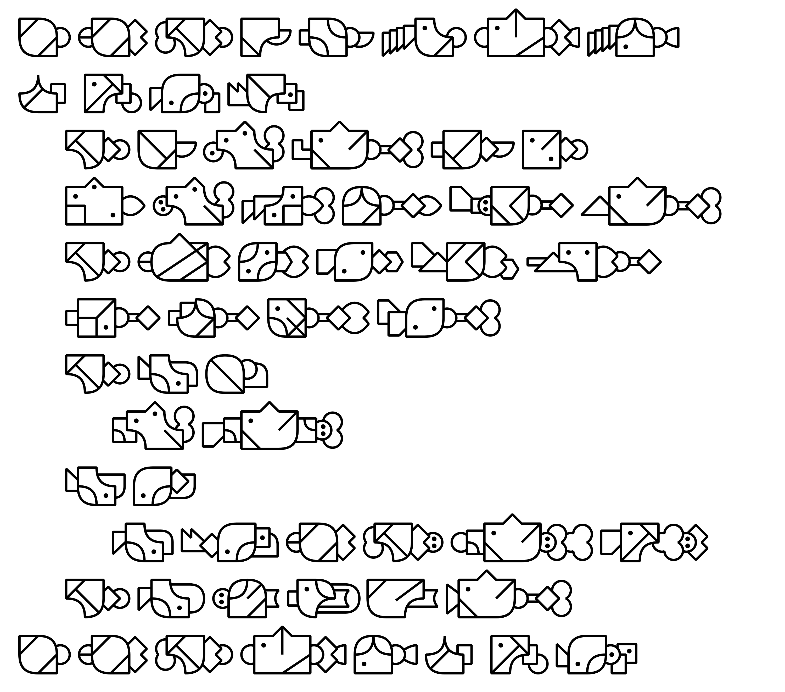
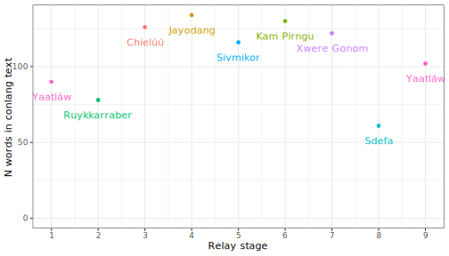
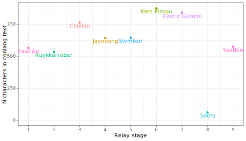
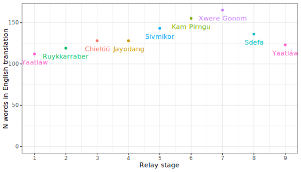
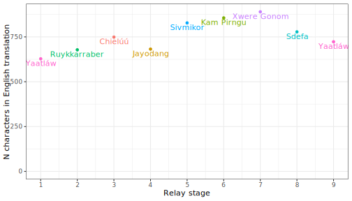

❓ About
This website showcases the results of the LTS Relay (aka The Relayening), a conlang relay involving members of the LangTime Studio Discord server. However, as it was not signed off on by CEO Bib Larid(i)on, Esq., it does not constitute an officially-sanctioned LangTime Corp enterprise.
🗓 Participants and schedule
The table below shows the eight participants that took part in the relay, the languages used as well as the intended and actual schedule. A link to PDF copies of each torch document is also provided; these can also be viewed below. Each participant was given a week to decipher and translate the text and craft their torch document; however, this relay took a very laid-back approach to the concept of deadlines.
| Participant | Language1 | Planned torch receipt date | Actual torch receipt date | Torch |
|---|---|---|---|---|
| Jake Penny | Yaatláw | n/a | n/a | |
| Arayaz | Ruykkarraber | 1 Jan. 2024 | 31 Dec. 2023 | |
| Miles Wronkovich | Chielúú | 8 Jan. 2024 | 7 Jan. 2024 | |
| Magpie | Jayodang | 15 Jan. 2024 | 9 Jan. 2024 | |
| Graham Hill | Sivmikor | 22 Jan. 2024 | 14 Jan. 2024 | |
| Tethys | Kam Pirngu | 29 Jan. 2024 | 25 Jan. 2024 | |
| Keras Saryan | Xwere Gonom | 5 Feb. 2024 | 27 Jan. 2024 | |
| Jonathan Kane | Sdefa | 12 Feb. 2024 | 8 Feb. 2024 | |
| Jake Penny | Yaatláw | 19 Feb. 2024 | 18 Feb. 2024 | n/a |
The timeline below further illustrates the amount of time taken to pass the torch by each participant except the relay master, Jake.
👀 The unveiling
The results of the relay were revealed in a Google Meet call with all participants. This was recorded and later released publicly on Let’s Have a Bouba on YouTube. The video can be viewed below, as can the slides used in the grand unveiling.
🔥 The torches
As well as being available for download above, each torch document can be viewed in the tabs below. Some include an English translation, others not, but this can be seen for all languages in the video and slides above as well as on this page below. There is, of course, no second Yaatláw torch.
🔁 The translation trajectory
Since, let’s face, what you’re probably most interested in is how the text evolved over the course of the relay, the text and English translation at each stage of the relay are reproduced below to make your life that little bit easier.
Jake – Yaatláw
Chį́plį́ yu títsaw síílį sayshu pę́ę́?
yu títsaw síílį fífyi tsáw maamaafúa mamąąyaw. tlá fífyi ę́bu’ų́bu síí maa pątsáá shąąfę́ hláw. guy sáw hlía plaatú su sų́tsú mamą áypa lawtsí saw pąsąlą. kaw tsapą́w bąątu tų́ lawtsí ikyi pąsąlą sáw ndląwkíí. yąą chųyąą títsaw sę́kaw u’áy mamą: mamą klu chį́plį́ yu títsaw síílį sayshu pę́ę́ ayaw. tąyśu (tuu) ayaw. la hlę́fa ayaw fu. yu atsę́ę́tsę́ pę́ę́. chį́fua síílį sayshu mam tą.
shlí gyuayaa tsáw kúńi tsúa paa ńu ndlua tlúú Shááluta Káwti (michúafi kaypį́ nzą́fya witaychua tsúkí) ąątsę́ę́tsę́ Tsíshááta Nuucháánuhláta.
Why are we still looking for berries?
A mother and daughter were out in the mountains looking for maqui berries. They see a tree with a lot of berries and stop to collect them. The mother accidentally stepped on a beehive, so bees flew out. They ran and hid until the bees went away, dropping their berries. They carried on looking for berries in the mountains. The daughter asked her mother, ‘mum, why are we still looking for berries?ʼ. The mother replied ’be quiet my daughter! We are bonding and I still want berries.’
The above text is inspired by a story by Charlotte Coté (2022) of the Nuu-Chah-Nulth community of Tseshaht.
Arayaz – Ruykkarraber
Sunes sardeyg kiyurides brennas auri
Maki sardeyg dese, maru arbu rutres ak kiyurides drer. Ruyk maki turen nrik radyeyr, daneyr, iban kibisbiskeuir. Maru gasekir, rudusen dureyr, tedus rad. Nrik giutir, ukreyn udibir; dusis ikateg radye tugnin ag. Agx! Rantin, sardeyn nrik adga!
Dese yayir: “Mama! Sunes sardeyg kiyurides brennas auri kaur!?”
Maru sterir: “Dese anasau! Insun kribaras adnambas.”
Marus sardeyg igat brenna.
Resides di badu Charlotte Cotés-sasak badu bettay. Ad 2022es ak asau; ad Tseshahtnat, Nuu-chah-nulth runrikat bet.
Why we still look for berries
A daughter and mother were looking for maqui berries in a cloud(y) forest. They saw a rich maqui tree, stopped, and picked them [the berries]. The mother fell over and crushed a beehive, and a swarm of bees appeared. They ran and hid themselves; the bees could not see them. Agh! They dropped the basket and berries!
The daughter screamed: “Mother! Why are we still looking for berries!?”
The mother answered: “Daughter, do not speak! We are becoming [better] friends.”
The mother still needs berries.
The text above is a descendent of a story told (lit. made) by Charlotte Cotés. She told it in 2022; she is from Tseshaht and the Nuu-chah-nulth nation.
Miles – Chielúú
Wáápa niyáá kúsa cháyu méhu ámú háyu faayee ííha pííne itsúút kúút ííchú uo’oláá. Kú hutʼíí úúpí ííha tʼáát sáá fi laa itsúút, háyu úúpí wikáá itsúút óákʼaa, kʼaang micháá mékʼu itsúút kúút. Méhu kʼoataa úúpí fi pʼóó máácha fofíí, shikíí fofíí óákʼaa micháá yaa. Kú hutʼíí úúpí sáá ííha pʼunáá kú, kʼaang fofíí kúút ííha kʼít kú. Kú kʼoataa suum kúsa fansóó itsúút shee, shikíí fu itsúút fi t’úú. Wáápa úúpí shímu méhu: “Xipʼo chʼáhí ííha pííne itsúút kúút, tʼááng púmu?”. Méhu ietlóó chʼoachúúm wáápa: “Pʼo kʼít chʼoachúúm! Xipʼo xú’e méhóápa háyu xipʼuu suosammáát.”. Méhu xáá féé mékʼu itsúút kúút.
Ifo kúút háyu ketíí kééme, xaa Sháálút Kotéé háyu méhóápa háyu níchʼiifo. La ketíí chʼoachúúm áánu 2686, ííchú Sesháánát, háyu xaa Nuochaanúút háyu máácha xúóshí.
A daughter and her pale mother were searching for blackcurrants in the forest. They saw and stopped walking toward a blackcurrant tree that grew many berries and began gathering berries. The mother fell on and crushed a beehive, when suddenly many bees began arriving. They ran away and hid themselves and the bees could not see them. They could not hold all the berries and dropped the bowl of berries. The daughter asked her mom: “Why are we searching for berries, again?”. The mother responded to her daughter: “Stop talking! We are building our family bond!”. The mother still wants to collect berries.
The words written above are a story from the ancestors of Charlotte Cotés. It was told in 2022 in Tseshahtnat, a village of the Nuu-chah-nulth.
Magpie – Jayodang
Joroge bang chaseko ri e maye hibi kel da umi lai ngo im chabe. Pertujes da abe umi waim dero da umi pauga ri nat waim, meldes im riyan ka im umi. Tinge e maye ri hanak da chike, has ki ike pauga. Natasijes ri igehijes, ri pertu te lejes yi as ike. Wisor lejes im umi ri tingem wai yi im ngor kajes. Kim e chaseko wai e maye ihim, “Sambok jorogerau da umi lai kina?” San e maye wai e chaseko ihim, “San le mo. Derorau da yusu wai jes adabang.” Esu e maye im riyan ka umi lai ngo sabi pauga.
Ihim odang im odamauga ka e adabang ka Salut Kote. San te waim olih gat tora ka Sesanat na dakoh pauga jikimai jikedik nyayang ri mai ngo im jak Nechanut.
A girl and her pale mother searched for black berries in the forest. They saw a tree that had grown many berries and walked toward it, then began taking the berries. The mother fell and broke a beehive and many bees came. They ran and the hid, and they were not seen by the bees. They could not hold the berries and they fell from their hands.
The girl asked her mother, “Why are we looking for black berries once again?”
The mother replied to the girl, “You donʼt talk. We make a knot for the ancestors.”
The mother wanted to gather black berries many times.
The words written are Salut Kote’s ancestor’s story. It is said that over 6862 people of Sesanat live in the Nechanat village.
Graham – Sivmikor
Heni tsanni zbas hen a sanda moy jo ney Sesanat zan ivetyo neh Netxanutyo. Divi tsan, ehu jow makahalowh ney Salut Koteyh fanda, ev ex muvna na fen wotu ho dalinda.
Dilavna a nedaz dembi nu banzayn reyz nofte zulevleg. Veyd ve kuji jaw zulevleg ster, ajov nofte. Rexponyu, rozne rekyo mar zinijni xoz, jreg sav ava ner ron murug. Behre ro heya, mawxus gak, gow wol mi zulevlegza zvus nofte kuvi. Henvawn nuy “Twarnam, nofte zulevleg reyn zow?” Henzivna nuy “Kavuxkays la halay! Divi xnofte, bas manal snel ho dalinda!”
Gow nofte vay ava ner o zulevleg jul yavri ey xah ster zay kasi. Uvi xnofte, muvna nu tabra kehu zinijay, gow skovna ho dalinay.
This is a story told by the seven thousand or so Sesanat people living in the town of Nechanut. It’s about the mythological character Salut Kote, and how she learned to respect her ancestors.
One day Salut Kote’s mother led her into the forest to gather blueberries. They saw a blueberry bush and started picking from it. Her mother stumbled and broke a beehive, and the bees swarmed out and attacked them. They ran away and managed to escape from the bees, but this made them drop all the blueberries. She asked her mother, “Why did we gather blueberries, anyway?” Her mother replied, “Don’t ask such questions! Gathering blueberries ties us to our ancestors!”
So they gathered blueberries again the next day, and many more times after that. Each time, the gathering reminded her of the bees… which reminded her of her ancestors.
Tethys – Kam Pirngu
Ndaak punnu nawa-mang ka ti-ram Tiranat ta nuppa ruk Nittjanuttju. Ramba ti-nawa Tarut Kutti tam-mang miwak nggarngawi nuppa ti-mit mbi, ku pambam num ti-ramba nua ti-mama ngiwa-wir.
Ti-mamaak-kir nanawa kir ri ruk piu-mang nua ti-rikki rakki tamut. Pam kirra muttau-mang kunngur tak rakki tamut, ku nanamu ri ti-rikki. Puppurrat ti-mama-wir ku ririmat kirrak rundi tinik nggirau-mang. Ka ti-wa, ti-rinikkak nggirappak taak kunggun niri-mang, kw angur Tarut Kutti ku ti-mama-wir. Ti-naak kaawaa ti-rinik nggirap, ku tak ti-wak-kirra puppurrat ti-rakki tamut tittikki.
Tarut Kattu kangam ri ti-mamma-wir, “Ndaraak tikki rakki tamut nua min?”
Ti-mama-wir kangam ri kir, “Kam ik ti-wi! Pam nik ndara ri ti-mama ngiwa-nara ka ti-rikki rakki tamut!”
Rin ti-wa, kirrak tittikki rakki tamut tak pikkat ta. Tak ti-rikki, pam ranuk Tarut Kattu ti-nawa tinik nggirap ku ti-nawa mama ngiwa.
Iʼm spinning a story from the many Tiranat people in the land of Nittjanuttju. Hear the story of Tarut Kutti, who was a great person in the far past, and who learned to respect her ancestor.
Her mother lead her to a forest to pick blueberries. They saw a bush that was heavy with blueberries, and started gathering. Her mother fell and accidentally broke a beehive. From this, the bees formed a cloud and, like a wave crashing over a ship, overwhelmed Tarut Kutti and her mother. The pair left the bees, and with their flight the gathered blueberries fell.
Tarut Kattu said to her mother, “Why do we pick blueberries?”
Her mother said to her, “Donʼt say that! We are bound to our ancestor by the blueberry picking!”
After this, they picked blueberries for many days. With the picking, Tarut Kattu was taught the story of the bees and the story of the ancestor.
Keras – Xwere Gonom
Geum aṛaṭaǧa deme ṭeǧeṛi na Ḍiṛanaḍaṛin ken Niidžanoodžom. Odohgiš ṭeǧeṛi isaṭaǧa Ḍaṛoḍa Gooḍige, xadla isekiipe ži ło’om gobom isadlaara ži daǧin geen yiḍibauyii ǧopa na dzii’in gobom siin.
Somodloamii ǧwama siin na xiidlin giažan na tsamiran giažan goamom. Goliiš iṭhanii siid, yapopo’oga dan giažan goamom, seke’liǧwed, iḍa’lian siid tsama. Soḍogii ǧwama siin, gehn gizin ihi’gian sii, ših iwaa’ian gizid, isoxoomiid Ḍaṛoḍa Gooḍige dzi ǧwamaga siin. Simipeǧwiid bee ken gizirin, setši’giǧwed, ołobii siid giaža goamom yitsa’minen.
Sithešii Ḍaṛoḍ Gooḍi ǧwamaga siin: Neteen atsama yah giaža goamom?
Soyoṛii ǧwama siin: Ke’ ihdiš žod meh! Dan tsamiran giažan goamom yegwiaḍeh yah2 na dzii’in gobom yahin!
Geum, ṭianin hoš aratsamira siid giaža goamom. Ken tsamiran, siitšii Ḍaṛoḍa Gooḍige ṭeǧeṛi ihaṭaǧad gizira dzi ṭeǧeṛi isaṭaǧa dzii’ge gobom.
Now I shall tell you a story from the Ḍiṛanaḍ people of Niidžanoodžo. Listen to the story of Ḍaṛoḍ Gooḍi, a strong person who lived there long ago and who was taught respect for his ancestors.
His mother led him to an orchard for the blue fruit harvest. They saw a plant which was laden with blue fruit and enthusiastically began picking. His mother fell and broke a beehive. Because of this, the bees formed a cloud which overwhelmed Ḍaṛoḍ Gooḍi and his mother. The two of them fled from the bees, quickly dropping the blue fruit which had been picked.
Ḍaṛoḍ Gooḍi asked his mother, “What do we pick blue fruit for?”
His mother replied, “Don’t say such a thing! It is through the blue fruit harvest that we are connected to our ancestors!”
After this, they picked blue fruit for many days. It is from the harvest that Ḍaṛoḍ Gooḍi was given the story of the bees and the story of the ancestors.
Jonathan – Sdefa

There once was a person who lived in this place long, long ago and who learned to respect their ancestors. I will tell their story. Listen to it!
The person’s parent brought them into these woods so that they could gather blueberries. They saw a plant with many berries, so they very happily began to collect them.
The parent knocked down a beehive, causing the bees to emerge and swarm around them! The two quickly ran away from the bees, dropping the berries they had gathered.
The child asked, “Why do we gather blueberries?”
The parent responded, “Don’t say that! By gathering blueberries, we are connected with our ancestors.”
After this, the two gathered blueberries for many days.
There once was a person who learned to respect their ancestors. Now I have told you their story.
Jake – Yaatláw (reprise)
Tlua sę́kaw mya tíaku fulų yu matį́ sífį kuu day tsúkú. La yu saká ndlua pú táńi tlua fu úlu plą́ysú pítsų́ sunąy ląlą.
Mya la shąąfę́ síí’úú úlu maama yąą sífį ląwnu. Tlá síí’úú si ishį́ shąąfę́ síí’úúlų hláw guy shíw fua. Kaw guy sáw sų́tsú hlų́y matį́ pąsąlą ląwnu. Guy sáw lawtsí yuslafu hlálą pąsąlą, áypa sáw síí’úúlų tsapą́w lawtsí. Uʼáy ląwnu sífį: chį́plį́ yu títsaw síí’úúlų pę́ę́? Tlua lawtsí: tsáw tlua hlų́lų chę́ śę́. Yu shąąfę́ síí’úúlų pę́ę́ tulu yąą tíakulų pę́ę́. Ngayńay yu shąąfę́ síí’úúlų.
Kaw tlua ndlua pú sífį kúú pítsų́ ńu sunąyyi tíakulų tuu tśilį fu.
Once upon a time there lived a person who belonged to a clan. Come listen to the story I will tell of how they learned to respect their people!
A parent went into the forest to collect blueberries with the person. They saw a blueberry bush and started collecting berries contentedly. The parent knocked down a hive that bees were living in. Because the bees came out and surrounded them, they dropped the blueberries and left running. The person asked the parent, ‘why are we collecting blueberries?’ The parent says ‘don’t say these words. We collect blueberries, connecting us with our ancestors.’ They collected blueberries for many days.
I have told you the story of the person who learned about respecting the ancestors.
💅 How it started; how it’s going
And, because, why not, here is a direct comparison of the starting (left) and final (right) texts in both Yaatláw and English.
Chį́plį́ yu títsaw síílį sayshu pę́ę́?
yu títsaw síílį fífyi tsáw maamaafúa mamąąyaw. tlá fífyi ę́bu’ų́bu síí maa pątsáá shąąfę́ hláw. guy sáw hlía plaatú su sų́tsú mamą áypa lawtsí saw pąsąlą. kaw tsapą́w bąątu tų́ lawtsí ikyi pąsąlą sáw ndląwkíí. yąą chųyąą títsaw sę́kaw u’áy mamą: mamą klu chį́plį́ yu títsaw síílį sayshu pę́ę́ ayaw. tąyśu (tuu) ayaw. la hlę́fa ayaw fu. yu atsę́ę́tsę́ pę́ę́. chį́fua síílį sayshu mam tą.
shlí gyuayaa tsáw kúńi tsúa paa ńu ndlua tlúú Shááluta Káwti (michúafi kaypį́ nzą́fya witaychua tsúkí) ąątsę́ę́tsę́ Tsíshááta Nuucháánuhláta.
Tlua sę́kaw mya tíaku fulų yu matį́ sífį kuu day tsúkú. La yu saká ndlua pú táńi tlua fu úlu plą́ysú pítsų́ sunąy ląlą.
Mya la shąąfę́ síí’úú úlu maama yąą sífį ląwnu. Tlá síí’úú si ishį́ shąąfę́ síí’úúlų hláw guy shíw fua. Kaw guy sáw sų́tsú hlų́y matį́ pąsąlą ląwnu. Guy sáw lawtsí yuslafu hlálą pąsąlą, áypa sáw síí’úúlų tsapą́w lawtsí. Uʼáy ląwnu sífį: chį́plį́ yu títsaw síí’úúlų pę́ę́? Tlua lawtsí: tsáw tlua hlų́lų chę́ śę́. Yu shąąfę́ síí’úúlų pę́ę́ tulu yąą tíakulų pę́ę́. Ngayńay yu shąąfę́ síí’úúlų.
Kaw tlua ndlua pú sífį kúú pítsų́ ńu sunąyyi tíakulų tuu tśilį fu.
Why are we still looking for berries?
A mother and daughter were out in the mountains looking for maqui berries. They see a tree with a lot of berries and stop to collect them. The mother accidentally stepped on a beehive, so bees flew out. They ran and hid until the bees went away, dropping their berries. They carried on looking for berries in the mountains. The daughter asked her mother, ‘mum, why are we still looking for berries?ʼ. The mother replied ’be quiet my daughter! We are bonding and I still want berries.’
The above text is inspired by a story by Charlotte Coté (2022) of the Nuu-Chah-Nulth community of Tseshaht.
Once upon a time there lived a person who belonged to a clan. Come listen to the story I will tell of how they learned to respect their people!
A parent went into the forest to collect blueberries with the person. They saw a blueberry bush and started collecting berries contentedly. The parent knocked down a hive that bees were living in. Because the bees came out and surrounded them, they dropped the blueberries and left running. The person asked the parent, ‘why are we collecting blueberries?’ The parent says ‘don’t say these words. We collect blueberries, connecting us with our ancestors.’ They collected blueberries for many days.
I have told you the story of the person who learned about respecting the ancestors.
🫐 Lagniappe
Finally, just for a bit of fun, the table and plots in the tabs below show how the length of the text and its English translation changed over the course of the relay in terms of number of both words and characters.3
| Stage | Participant | Language | N words (conlang) | N characters (conlang) | N words (English) | N characters (English) |
|---|---|---|---|---|---|---|
| 1 | Jake | Yaatláw | 90 | 565 | 112 | 628 |
| 2 | Arayaz | Ruykkarraber | 78 | 534 | 119 | 678 |
| 3 | Miles | Chielúú | 126 | 763 | 128 | 749 |
| 4 | Magpie | Jayodang | 134 | 644 | 128 | 682 |
| 5 | Graham | Sivmikor | 116 | 645 | 143 | 828 |
| 6 | Tethys | Kam Pirngu | 130 | 875 | 155 | 856 |
| 7 | Keras | Xwere Gonom | 122 | 841 | 165 | 890 |
| 8 | Jonathan | Sdefa | 61 | 61 | 136 | 778 |
| 9 | Jake | Yaatláw | 102 | 575 | 123 | 723 |




Footnotes
That is, the language translated into not out of.↩︎
This should read yahga and instead of yah. The error is reproduced here to match the torch document.↩︎
All conlang texts use the romanisation as the basis for this with the exception of Sdefa for which the orthography is used and, additionally, characters and words are equated for Sdefa.↩︎